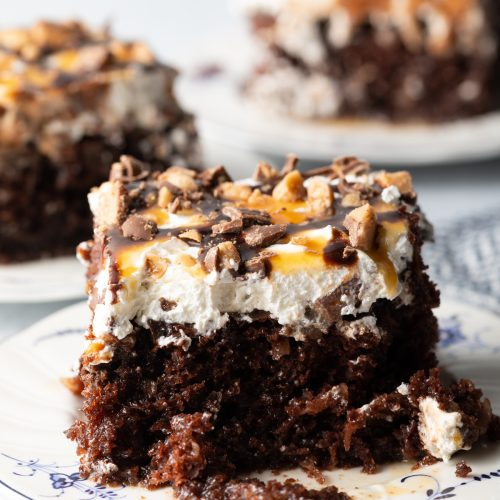

Better Than Sex Cake

You Can Be the Judge of That
This dessert will knock anything out of the park involving anything with the bedroom!
You will want to serve this up if you want to serve her up!
Ingredients
- Devil's food cake mix plus additional igredients per box such as oil and eggs
- Caramel Sauce
- Sweetened condensed milk
- "Heath" chocolate toffe bars or preferred candy, chopped
- Cool Whip
- chocolate syrup
Directions
- Preheat oven to 350 degrees
- Bake the Devil's food cake as described on box
- Meanwhile Chop Heath bars
- Mix 3/4 cup Caramel sauce with 1/4 cup sweetened condensed milk
- When Devil's food cake is baked poke holes throughout cake, 1 inch apart
- Slowly pour the carmel mixture over the cake to fill all the holes
- Let Cake cool, Once cooled spread Cool Whip evenly over the top
- Drizzle the cake with the 1/4 cup caramel sauce and chocolate syrup then sprinkle heath bars